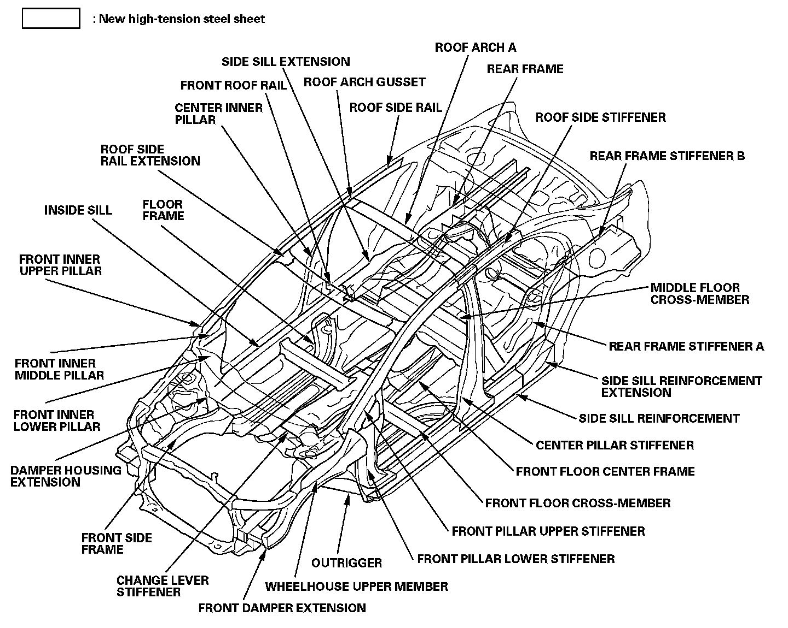

High-Tension Steel Sheet Framed Area and Precautions For Its Repair
High-tension Steel Sheet Framed Area and Precautions for Its Repair
The New High-tension Steel Sheet has greater tension strength than the conventional high-tension steel sheet. Although it's a thinner sheet it maintains the same strength capacity as the previous thicker ones. Because the manufacturing press process has been improved, the usage area has been expanded. For this vehicle, the New High-tension Steel Sheet
is used for its main frame and its cabin construction parts. To make the new model lightweight and to greaten the safety capacity of the high crush-absorption frame.
When repairing the portion of the New High-tension Steel Sheet, pay attention to the following items:
- The new high-tension steel parts of the frame are all spot welded together. In order to disassemble you should drill a hole in the sections that were spot welded together. A drill with a sharp headed bit is mandatory. Then it will be a very simple process to repair the section being worked on.
- The New High-tension Steel Sheet is very rigid compared to the older dated steel sheets. Because of its rigid nature it is difficult to reform.When an automobile's frame is partially constructed with the New High-tension Steel Sheet it should be reformed by using a frame correction machine. Inspect the body and frame when the reform is completed for stress related damage to the sections that are not made of the New High-tension steel. After the reformation process is completed, inspect the body dimensions for shrinkage because the New Hightension Steel Sheet has a spring back restoring characteristic that the older steel does not possess.
- Finally spot-weld the New High-tension steel sheet to the area in which is pre-described in the users manual.When the spot welding is done, check to make sure all of the parts are securely fastened. In the case of an insecure area use the MIG arch welder for the best results.